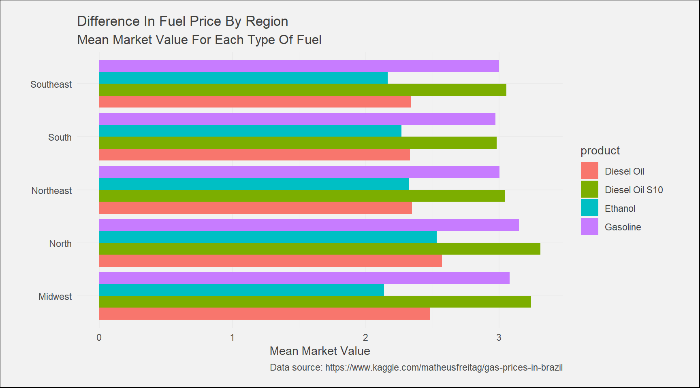
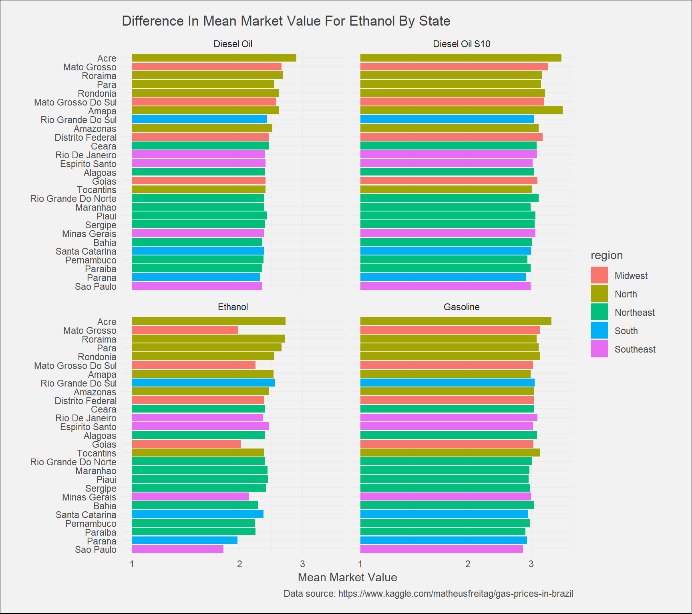
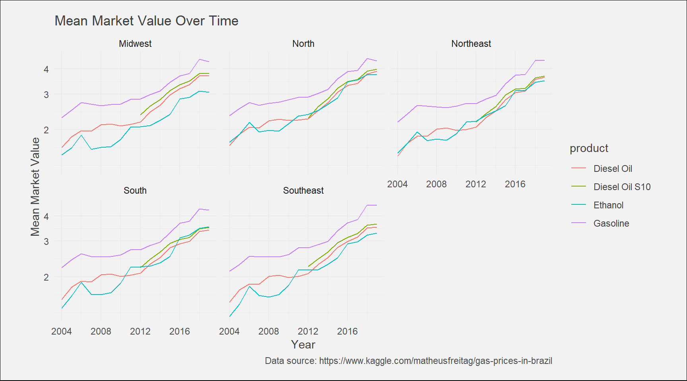
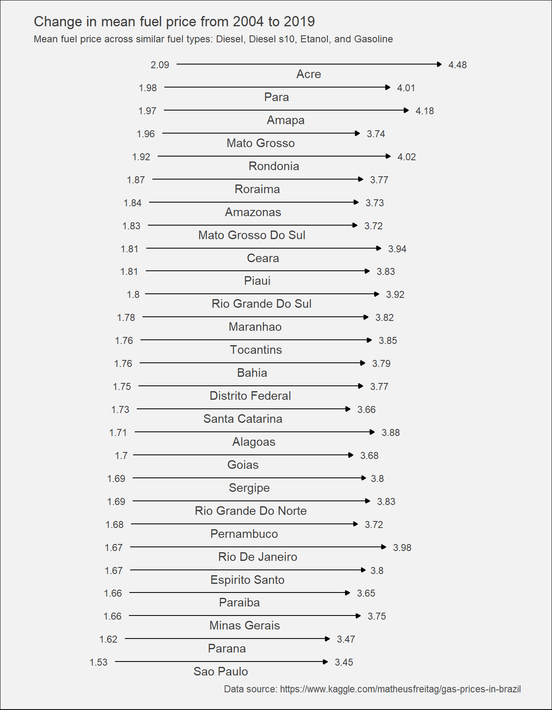
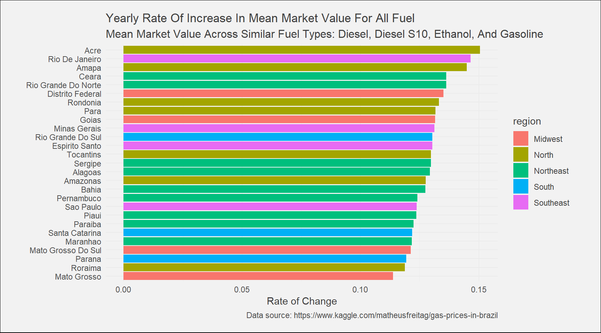

Brazil Gas Prices
Aaron Johnson
August 23, 2019

Summary
The National Agency of Petroleum, Natural Gas and Bio Fuels (ANP) releases reports of fuel prices used throughout the country of Brazil. This particular dataset comes from Kaggle, curtesy of Matheus Eduardo Freitag. In this report we’ll look at the change in price of different types of fuel across 5 main regions of Brazil.
Preparations
Let’s load in the data and libraries we’ll need. We’ll use the tidyverse package to make data wrangling easier, and we’ll use the lubridate package to convert the date columns to a proper date data type. We’ll use the broom package to turn model data into dataframes, and we’ll use the purr package’s map function to apply operations to items in a list.
library(tidyverse)
library(lubridate)
library(purrr)
library(broom)
raw_gas <- read.csv("2004-2019.tsv", sep = "\t")Analysis
Data
Let’s take a look at the data.
glimpse(raw_gas)## Observations: 106,823
## Variables: 21
## $ X <int> 0, 1, 2, 3, 4, 5, 6, 7, 8, 9...
## $ DATA.INICIAL <fct> 2004-05-09, 2004-05-09, 2004...
## $ DATA.FINAL <fct> 2004-05-15, 2004-05-15, 2004...
## $ REGIÃO <fct> CENTRO OESTE, CENTRO OESTE, ...
## $ ESTADO <fct> DISTRITO FEDERAL, GOIAS, MAT...
## $ PRODUTO <fct> ETANOL HIDRATADO, ETANOL HID...
## $ NÚMERO.DE.POSTOS.PESQUISADOS <int> 127, 387, 192, 162, 103, 408...
## $ UNIDADE.DE.MEDIDA <fct> R$/l, R$/l, R$/l, R$/l, R$/l...
## $ PREÃ.O.MÃ.DIO.REVENDA <dbl> 1.288, 1.162, 1.389, 1.262, ...
## $ DESVIO.PADRÃO.REVENDA <dbl> 0.016, 0.114, 0.097, 0.070, ...
## $ PREÃ.O.MÃ.NIMO.REVENDA <dbl> 1.190, 0.890, 1.180, 1.090, ...
## $ PREÃ.O.MÃ.XIMO.REVENDA <dbl> 1.350, 1.449, 1.760, 1.509, ...
## $ MARGEM.MÃ.DIA.REVENDA <fct> 0.463, 0.399, 0.419, 0.432, ...
## $ COEF.DE.VARIAÃ.ÃO.REVENDA <dbl> 0.012, 0.098, 0.070, 0.055, ...
## $ PREÃ.O.MÃ.DIO.DISTRIBUIÃ.ÃO <fct> 0.825, 0.763, 0.97, 0.83, 0....
## $ DESVIO.PADRÃO.DISTRIBUIÃ.ÃO <fct> 0.11, 0.088, 0.095, 0.119, 0...
## $ PREÃ.O.MÃ.NIMO.DISTRIBUIÃ.ÃO <fct> 0.4201, 0.5013, 0.5614, 0.59...
## $ PREÃ.O.MÃ.XIMO.DISTRIBUIÃ.ÃO <fct> 0.9666, 1.05, 1.161, 1.22242...
## $ COEF.DE.VARIAÃ.ÃO.DISTRIBUIÃ.ÃO <fct> 0.133, 0.115, 0.098, 0.143, ...
## $ MÊS <int> 5, 5, 5, 5, 5, 5, 5, 5, 5, 5...
## $ ANO <int> 2004, 2004, 2004, 2004, 2004...The loaded data contains 106823 rows and 20 columns.
I’ll want to convert the column names from Portuguese to English to make the analysis easier as I go along. Also, I’ll translate the various fuel types to English as well.
Preprocessing
clean_gas <- raw_gas %>%
select(-X) %>%
rename(start_date = DATA.INICIAL,
end_date = DATA.FINAL,
region = REGIÃO,
state = ESTADO,
product = PRODUTO,
num_stations_analyzed = NÚMERO.DE.POSTOS.PESQUISADOS,
measurement_unit = UNIDADE.DE.MEDIDA,
mean_market_value = PREÃ.O.MÃ.DIO.REVENDA,
standard_deviation = DESVIO.PADRÃO.REVENDA,
min_price_observed = PREÃ.O.MÃ.NIMO.REVENDA,
max_price_observed = PREÃ.O.MÃ.XIMO.REVENDA,
mean_price_margin = MARGEM.MÃ.DIA.REVENDA,
coefficient_of_variation = COEF.DE.VARIAÃ.ÃO.REVENDA,
mean_dist_price = PREÃ.O.MÃ.DIO.DISTRIBUIÃ.ÃO,
dist_standard_dev = DESVIO.PADRÃO.DISTRIBUIÃ.ÃO,
dist_min_price = PREÃ.O.MÃ.NIMO.DISTRIBUIÃ.ÃO,
dist_max_price = PREÃ.O.MÃ.XIMO.DISTRIBUIÃ.ÃO,
dist_coef_var = COEF.DE.VARIAÃ.ÃO.DISTRIBUIÃ.ÃO,
month = MÊS,
year = ANO) %>%
mutate(start_date = ymd(start_date),
end_date = ymd(end_date),
mean_price_margin = as.numeric(as.character(mean_price_margin)),
mean_dist_price = as.numeric(as.character(mean_dist_price)),
dist_standard_dev = as.numeric(as.character(dist_standard_dev)),
dist_min_price = as.numeric(as.character(dist_min_price)),
dist_max_price = as.numeric(as.character(dist_max_price)),
dist_coef_var = as.numeric(as.character(dist_coef_var)),
state = str_to_title(state),
product = str_to_title(product),
region = str_to_title(region),
product = str_replace(product, "Etanol Hidratado", "Ethanol"),
product = str_replace(product, "Gasolina Comum", "Gasoline"),
product = str_replace(product, "Glp", "Propane"),
product = str_replace(product, "Gnv", "Compressed Natural Gas"),
product = str_replace(product, "ÓLeo Diesel", "Diesel Oil"),
product = str_replace(product, "ÓLEO DIESEL S10", "Diesel Oil s10"),
region = str_replace(region, "Nordeste", "Northeast"),
region = str_replace(region, "Norte", "North"),
region = str_replace(region, "Sudeste", "Southeast"),
region = str_replace(region, "Sul", "South"),
region = str_replace(region, "Centro Oeste", "Midwest"))glimpse(clean_gas)## Observations: 106,823
## Variables: 20
## $ start_date <date> 2004-05-09, 2004-05-09, 2004-05-09, ...
## $ end_date <date> 2004-05-15, 2004-05-15, 2004-05-15, ...
## $ region <chr> "Midwest", "Midwest", "Midwest", "Mid...
## $ state <chr> "Distrito Federal", "Goias", "Mato Gr...
## $ product <chr> "Ethanol", "Ethanol", "Ethanol", "Eth...
## $ num_stations_analyzed <int> 127, 387, 192, 162, 103, 408, 278, 10...
## $ measurement_unit <fct> R$/l, R$/l, R$/l, R$/l, R$/l, R$/l, R...
## $ mean_market_value <dbl> 1.288, 1.162, 1.389, 1.262, 1.181, 1....
## $ standard_deviation <dbl> 0.016, 0.114, 0.097, 0.070, 0.078, 0....
## $ min_price_observed <dbl> 1.190, 0.890, 1.180, 1.090, 1.050, 0....
## $ max_price_observed <dbl> 1.350, 1.449, 1.760, 1.509, 1.400, 2....
## $ mean_price_margin <dbl> 0.463, 0.399, 0.419, 0.432, 0.240, 0....
## $ coefficient_of_variation <dbl> 0.012, 0.098, 0.070, 0.055, 0.066, 0....
## $ mean_dist_price <dbl> 0.825, 0.763, 0.970, 0.830, 0.941, 0....
## $ dist_standard_dev <dbl> 0.110, 0.088, 0.095, 0.119, 0.077, 0....
## $ dist_min_price <dbl> 0.42010, 0.50130, 0.56140, 0.59910, 0...
## $ dist_max_price <dbl> 0.96660, 1.05000, 1.16100, 1.22242, 1...
## $ dist_coef_var <dbl> 0.133, 0.115, 0.098, 0.143, 0.082, 0....
## $ month <int> 5, 5, 5, 5, 5, 5, 5, 5, 5, 5, 5, 5, 5...
## $ year <int> 2004, 2004, 2004, 2004, 2004, 2004, 2...Looking at the data, we can see that there are 3 levels of measurement for fuels. The measurement used for the more common fuel types (ethanol, gasoline, diesel oil, and diesel s10) is reais per liter.
We also have the measurement units reais per 13Kg, and reais per cubic meters. These units of measurement are used for propane and compressed natural gas respectively. For this exploration I’d like to look at fuels with the same unit of measurement. Let’s stick with the more common fuel types measured in reais per liter mentioned earlier.
liter_fuel <- clean_gas %>%
filter(product %in% c("Ethanol", "Gasoline", "Diesel Oil", "Diesel Oil S10"))Questions to Answer
I want to look at the change in fuel prices across different areas of Brazil for different types of fuel. To do this, I can look at the mean market value across the different regions and states. Let’s define some questions to guide the exploration:
- What is the mean market value for each type of fuel across each of the 5 regions?
- How have have fuel prices changed over time for each region?
- What states have the biggest change in fuel prices?
- What states have shown the most change in fuel price from 2004 to 2019?
Results
What are the mean market values of each type of fuel across the 5 regions?
liter_fuel %>%
group_by(region, product) %>%
summarize(meanMarketValue = mean(mean_market_value)) %>%
ggplot(aes(region, meanMarketValue)) +
geom_bar(aes(fill = product), stat = "identity", position = "dodge") +
labs(
x = str_to_title("region"),
y = str_to_title("mean market value"),
title = str_to_title("Difference in fuel price by region"),
subtitle = str_to_title("Mean market value for each type of fuel"),
caption = "Data source: https://www.kaggle.com/matheusfreitag/gas-prices-in-brazil"
) +
xlab(NULL) +
theme_ilo() +
coord_flip()
Here we see that Diesel Oil s10 and Gasoline have the highest mean market values in every region. Let’s go beyond each region and see how the mean market value for each type of fuel compares across the states.
liter_fuel %>%
group_by(state, region, product) %>%
summarize(meanMarketValue = mean(mean_market_value)) %>%
ungroup() %>%
mutate(state = fct_reorder(state, meanMarketValue)) %>%
ggplot(aes(state, meanMarketValue)) +
geom_bar(aes(fill = region),stat = "identity") +
labs(
x = str_to_title("state"),
y = str_to_title("mean market value"),
title = str_to_title("Difference in mean market value for ethanol by state"),
caption = "Data source: https://www.kaggle.com/matheusfreitag/gas-prices-in-brazil"
) +
scale_y_log10() +
facet_wrap(~ product) +
coord_flip() +
xlab(NULL) +
theme_ilo() 
#theme(legend.position = "none")Here we can see that the state of Acre appears to have the highest mean market values for fuel, while Sao Paulo appears to have the lowest.
How have fuel prices changed over time for each region?
liter_fuel %>%
group_by(region, year, product) %>%
summarize(meanMarketValue = mean(mean_market_value)) %>%
ggplot(aes(year, meanMarketValue)) +
geom_line(aes(color = product)) +
labs(
x = "Year",
y = "Mean Market Value",
title = str_to_title("Mean market value over time"),
caption = "Data source: https://www.kaggle.com/matheusfreitag/gas-prices-in-brazil"
) +
scale_y_log10() +
facet_wrap(~ region) +
theme_ilo()
In 2008 the National Council on the Environment issued a resolution which required the ANP to develop a fuel standard to enable the introduction of diesel fuel with a 10 mg/kg maximum sulfur limit (s10). Over the next few years, more and more states were required to start replacing S1800 and S1500 fuels for the s10. This would explain why we only see records for Diesel s10 after 2008.
Each type of fuel appears to follow the same general pattern across the 5 regions, with the Midwest having less of a tight grouping between Ethanol, Diesel Oil, and Diesel s10 prices. We also notice a convergence of mean market value between each type of fuel as time goes on.
How have fuel prices changed from 2004 to 2019?
In the above graph we saw how the mean market value generally followed the same patterns across all fuel types. It will be interesting to visualize the change in mean market value from 2004 to 2019 for each state.To do this, let’s combine the mean market value for each fuel type for each state.This will give us a general mean market value that will represent all fuel types for a specific state. We can then track the value over time.
by_state <- liter_fuel %>%
group_by(year, state) %>%
summarize(meanMarketValue = mean(mean_market_value))change_df <- by_state %>%
filter(year == 2004 | year == 2019) %>%
arrange(year) %>%
mutate(state = fct_reorder(state, meanMarketValue, last))# Make the altered version of change_df for the labels in the plot used below
mean_market_value <- change_df %>%
group_by(state) %>%
summarize(mean_market_value_per_state = mean(meanMarketValue)) %>%
ungroup()change_df %>%
ggplot() +
geom_path(aes(meanMarketValue, state),
arrow = arrow(length = unit(1.5, "mm"), type = "closed")) +
geom_text(
aes(x = meanMarketValue,
y = state,
label = round(meanMarketValue, 2),
hjust = ifelse(year == "2004",
1.4,
-0.4)
),
size = 3,
family = "Bookman",
color = "gray25"
) +
# Add labels to the plot
labs(
x = "Mean Martek Value",
y = "State",
title = "Change in mean fuel price from 2004 to 2019",
subtitle = "Mean fuel price across similar fuel types: Diesel, Diesel s10, Etanol, and Gasoline",
caption = "Data source: https://www.kaggle.com/matheusfreitag/gas-prices-in-brazil"
) +
theme_ilo() +
coord_cartesian(xlim = c(1, 5)) +
geom_text(data = mean_market_value,
aes(y = state,
x = mean_market_value_per_state,
label = state),
vjust = 1.5,
family = "Bookman",
color = "gray25") +
# Remove axes and grids
theme(
axis.ticks = element_blank(),
axis.title = element_blank(),
axis.text = element_blank(),
panel.grid = element_blank(),
# Reduce the font size of the subtitle
plot.subtitle = element_text(size = 9)
)
Here we can see that Acre had the highest mean market value in 2004 and ended with the highest in 2019. Sao Paulo started out with the lowest mean market value and ended with the lowest in 2019. While being able to see how much the mean market value has changed for each state, it would be nice to see the rate of change as well. Let’s visualize this as well.
by_state_region <- liter_fuel %>%
group_by(year, state, region) %>%
summarize(meanMarketValue = mean(mean_market_value))state_coefficients <- by_state_region %>%
ungroup() %>%
nest(-state, -region) %>%
mutate(models = map(data, ~ lm(meanMarketValue ~ year,.))) %>%
mutate(tidied = map(models, tidy)) %>%
unnest(tidied)state_changes <- state_coefficients %>%
filter(term == "year") %>%
filter(p.adjust(p.value) < .05) %>%
select(state, region, estimate) %>%
rename(rate_of_change = estimate)state_changes %>%
mutate(state = fct_reorder(state, rate_of_change)) %>%
ggplot(aes(state, rate_of_change)) +
geom_bar(aes(fill = region),stat = "identity") +
coord_flip() +
labs(
x = "State",
y = "Rate of Change",
title = str_to_title("Yearly rate of increase in mean market value for all fuel"),
subtitle = str_to_title("Mean market value across similar fuel types: Diesel, Diesel s10, Ethanol, and Gasoline"),
caption = "Data source: https://www.kaggle.com/matheusfreitag/gas-prices-in-brazil"
) +
theme_ilo() +
xlab(NULL) 
#theme(legend.position = "none") For the state of Acre, there was a 15 percent increase per year in the combined mean market value for all fuel types. Mato Grosso showed the least amount of change, with an increase of about 11 percent per year.
Conclusion
In this exploration, we looked at 4 different fuel types used in Brazil. Of those 4, Gasoline and Diesel Oil s10 had the highest mean market value in all 5 regions. When we compared fuel prices across the 5 regions we found that each region followed a similar pattern. We also saw that over time, as fuel prices increased, each fuel type began to be priced within a closer range. Finally, we saw that the state of Acre (located in the North region) had the highest mean market value for fuel and had the highest rate of increase in mean market value per year.
References
- Photography credit: Photo by Markus Spiske on Upslash (@markusspiske)